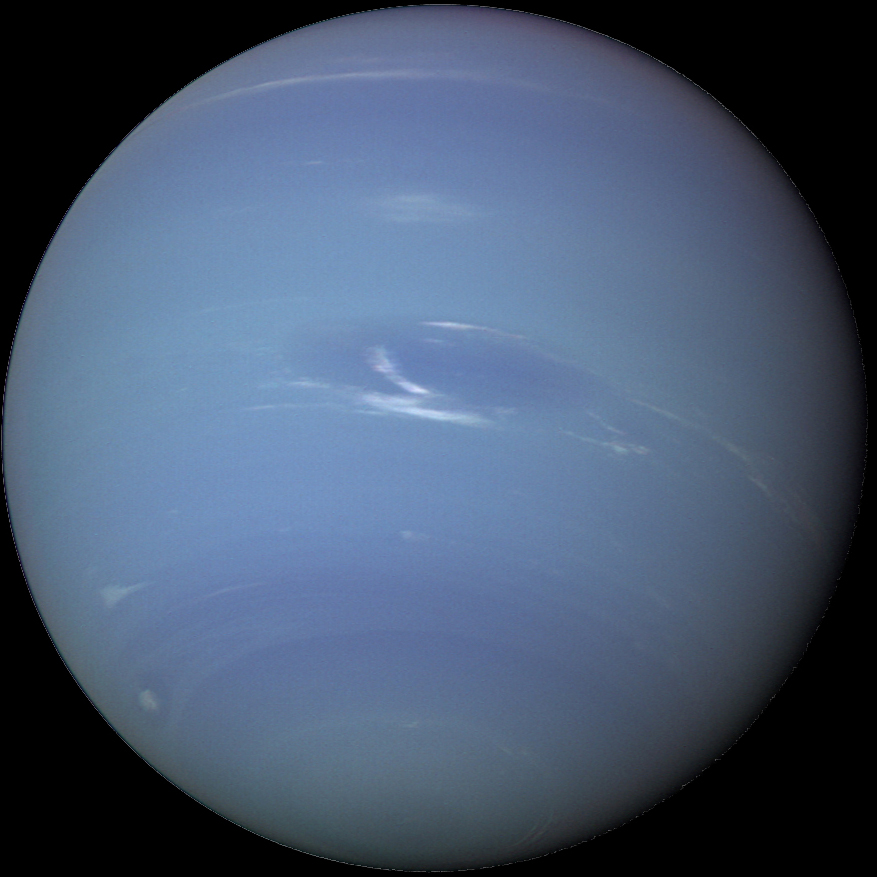

Нептун
Описание
- Непту́н — восьмая и самая дальняя от Земли планета Солнечной системы.
- По диаметру находится на четвертом месте, а по массе — на третьем.
- Масса Нептуна в 17,2 раза, а диаметр экватора в 3,9 раза больше земных.
- Планета была названа в честь римского бога морей.
- Обнаруженный 23 сентября 1846 года, Нептун стал первой планетой, открытой благодаря математическим расчётам.
- Обнаружение непредвиденных изменений в орбите Урана породило гипотезу о неизвестной планете, гравитационным возмущающим влиянием которой они и обусловлены.
- Нептун был найден в пределах предсказанного положения.
- Вскоре был открыт и его спутник Тритон, однако остальные 13 спутников, известные ныне, были неизвестны до XX века.
- Нептун был посещён лишь одним космическим аппаратом, «Вояджером-2», который пролетел вблизи от планеты 25 августа 1989 года.
Назад
